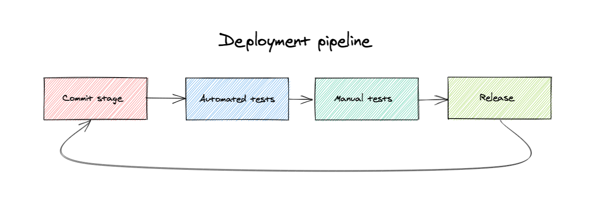

Cómo incrementamos valor con el despliegue de software?
Aplicando patrones y técnicas que permitan a los sistemas el ser desarrollados, entregados y desplegados frecuentemente para brindar software útil y funcional a los usuarios finales de la forma más rápida posible
Coplien, 2015
Lo mencionado por James Coplien nos direcciona a una forma de trabajo que asegure la puesta en marcha de sistemas en forma continua y consistente, tal forma de trabajo se consigue a través de los Flujos de Despliegue.
Flujo de despliegue

Un flujo de despliegue se define como:
Una implementación automatizada de los procesos de construcción, despliegue, prueba y entrega para un sistema de software.
Nota: Colocamos las referencias y nombres de las fases en Inglés en base a toda el material disponible, el intentar cambiar por su tradducción puede generar confusiones.
Commit stage/Versionamiento de código
Commit stage hace referencia al proceso de versionamiento del código fuente de sistemas de software; el proceso de programación de sistemas en una plataforma de desarrollo se versiona y comparte con los interesados en el sistema y sus cambios. Este proceso es esencial, pues asegura y prepara el sistemas para los siguientes puntos:
- Auditorías
- Procesos de calidad
- Automatización
Este proceso se lleva adelante usando herramientas de control de versiones, paradójicamente las mejores herramientas son las de código abierto y no así las que son proveídas de forma privada. Entre los participantes más importantes podemos identificar a: Git, Mercurial y Fossil SCM.
Automated tests/Pruebas automatizadas
El proceso de pruebas automatizadas se define como el conjunto de tareas necesarias para llevar el código fuente de un sistema, tomado a partir de un sistema de control de versiones, hacia los artefactos necesarios para su despliegue en un ambiente objetivo. Este proceso se facilita con el uso de herramientas de construcción, las cuales gestionas las tareas de limpieza, compilación, empaquetamiento y ejecución de pruebas automatizadas en los sistemas de software.
Históricamente los sistemas no son automatizados por defecto, se requiere una inversión importante de tiempo para automatizar la construcción de un sistema, y adicionalmente a esto, las pruebas automatizadas requieren también el trabajo del equipo de trabajo o de un equipo de aseguramiento de calidad. Las pruebas automatizadas verifican el funcionamiento correcto del sistema y sus partes, mas allá de su correctitud sintáctica y semántica (Freeman y Pryce, 2017).
Manual tests/Pruebas manuales
A pesar de que todos los procesos pueden ser automatizados, no todos los procesos y flujos de trabajo existentes son identificados al momento de automatizar, es el trabajo de las pruebas manuales el identificar todos los procesos que no esten ejecutándose con el resultado esperado. Una vez identificados estos procesos y flujos de trabajo, se procede a su automatización en una siguiente iteración (asumiendo que estamos usando un proceso iterativo e incremental).
Las pruebas manuales tienen un grado alto de subjetividad, es muy dependiente de las habilidades y contexto de los testers. Por este motivo, es importante invertir tiempo y recursos en formar un equipo o personas individuales con habilidades para identificar fallos en sistemas de software.
Release/Entrega
El proceso de entrega de un sistema de software a un ambiente determinado permite acceder a los usuarios finales o usuarios objetivo al sistema en desarrollo (un sistema esta en desarrollo hasta que se pasa a obsolescencia). El proceso de entrega es manual en un inicio, pero automatizable a través de diferentes ambientes, y dependiendo del ambiente de despliegue.
Idealmente se requieren al menos dos ambientes de despliegue para sistemas de software: ambiente de prueba y ambiente de producción. Para estos ambientes se tienen algunos requerimientos orientados a reducir problemas e inconvenientes futuros:
- Integración y producción deben ser idénticos en recursos
- Integración y producción deben ser idénticos en infraestructura de software (e.g. bases de datos, plataformas)
- Integración debe tener o simular la carga de producción
- Intrgración debe tener datos similares a los de producción
Referencias
- James Coplien and Gertrud Bjornvig. Lean Architecture. Wiley, 2015.
- Steve Freeman and Nat Pryce, Growing Object-Oriente Software with Tests. Pearson, 2017.